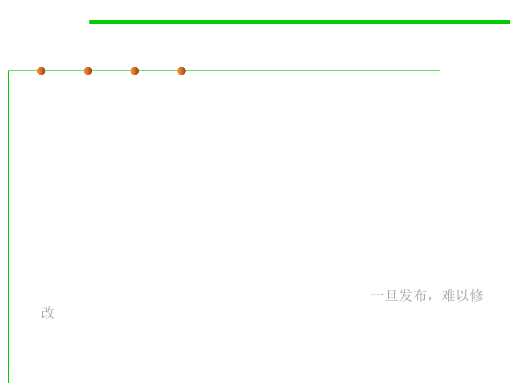

Why is API design important?
5.2 Construction for Reuse
▪ If you program, you are an API designer, and APIs can be among
your greatest assets
▪ Good code is modular – each module has an API
– Users invest heavily: acquiring, writing, learning
– Thinking in terms of APIs improves code quality
– Successful public APIs capture users
▪ Can also be among your greatest liabilities
– Bad API can cause unending stream of support calls
– Can inhibit ability to move forward
▪ Public APIs are forever – one chance to get it right 一旦发布，难以修
改
– Once module has users, can’t change API at will